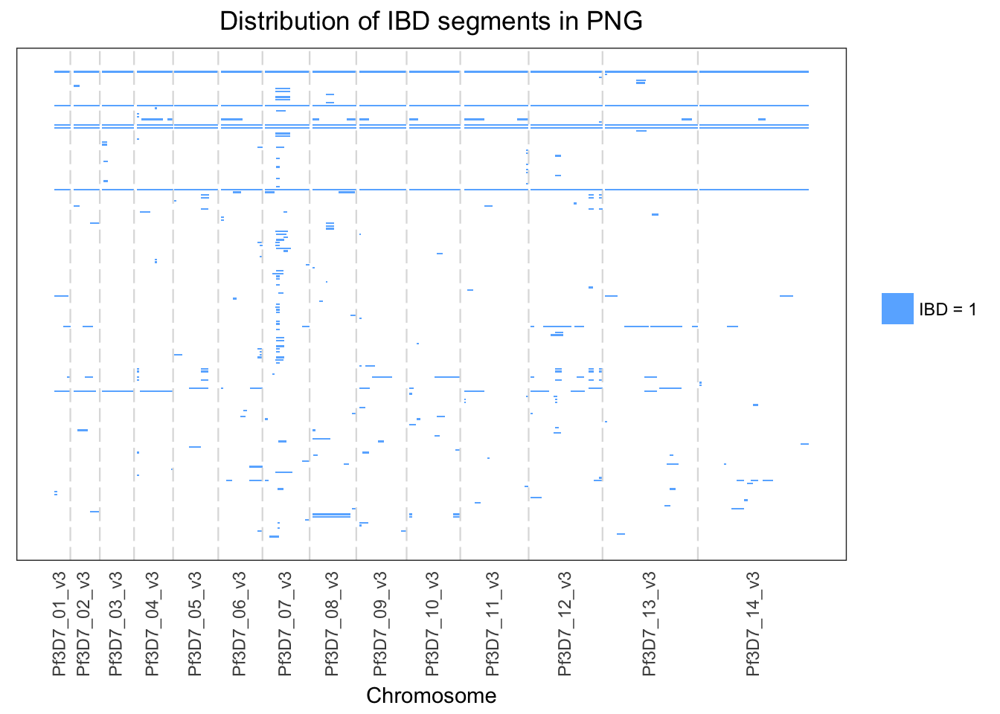
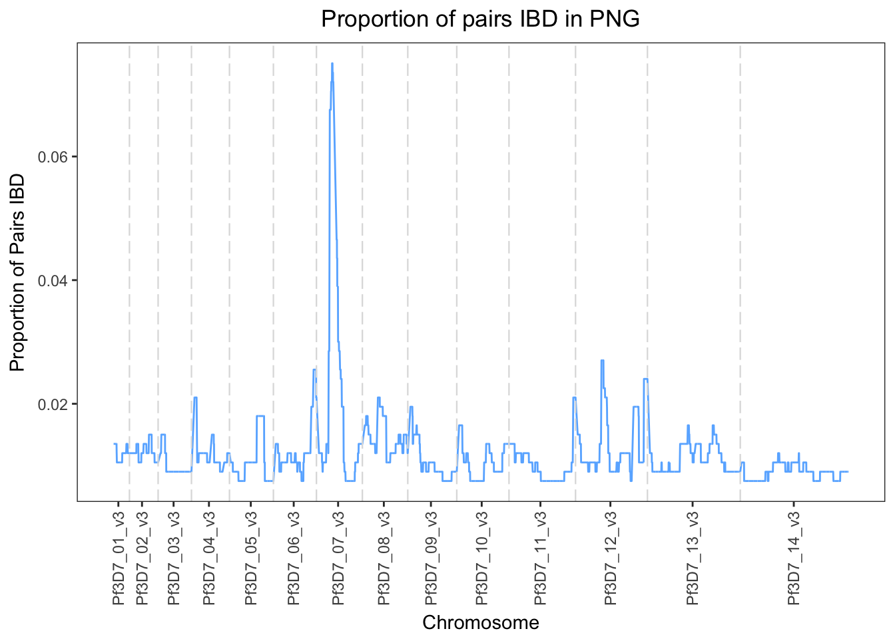
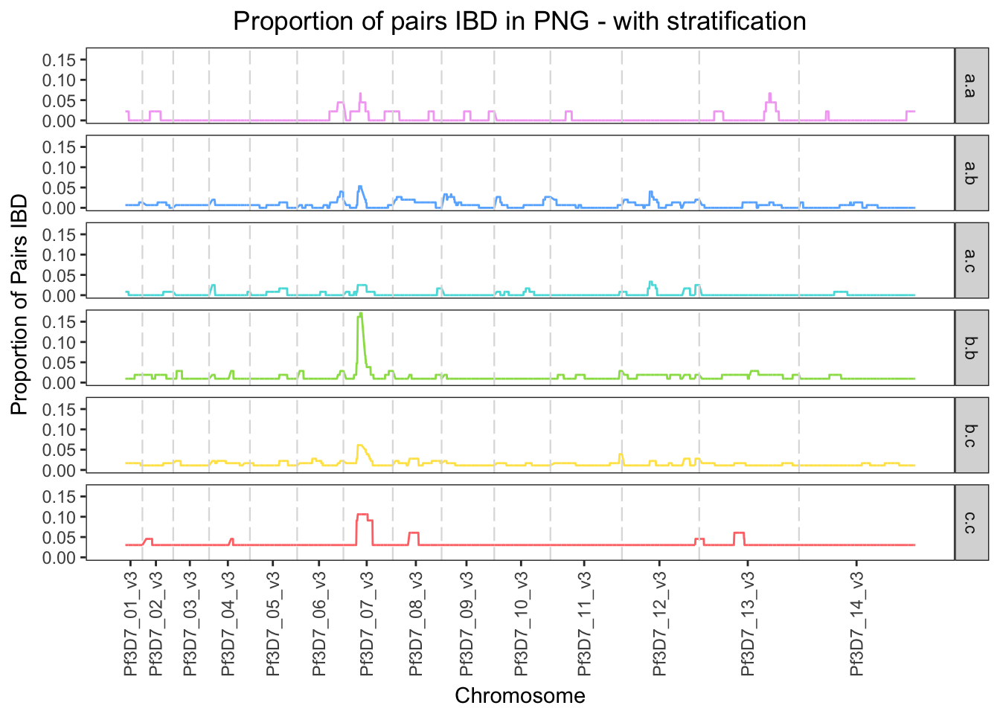
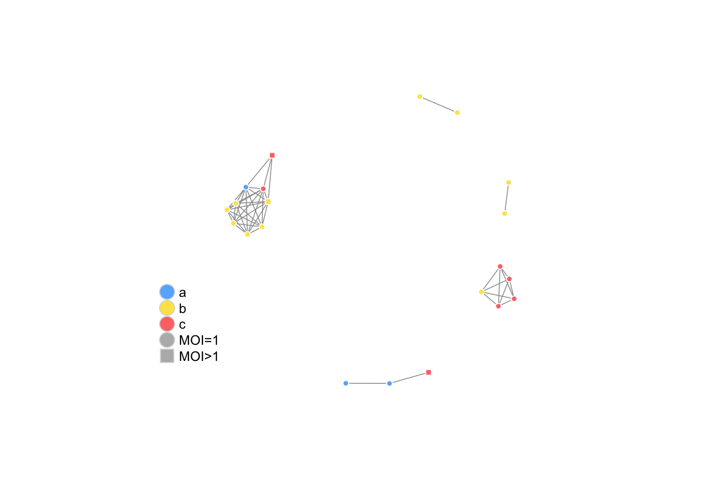
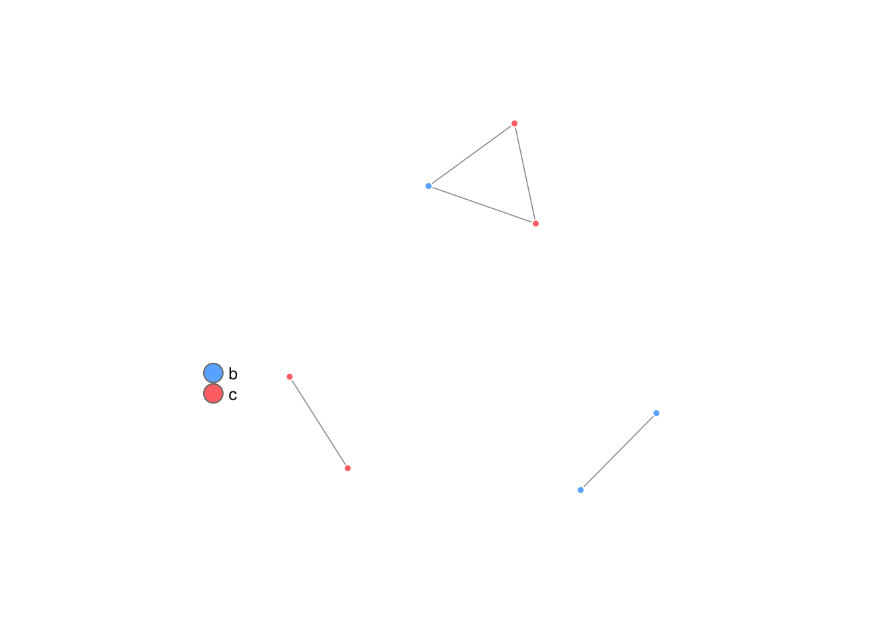

isoRelate performs pairwise relatedness mapping on haploid isolates using a first order continuous time hidden Markov model (HMM). Some isolates may have multiple infections, whereby the infected individual is carrying multiple genetically distinct strains of the species. Such isolates are said to have multiplicity of infection (MOI) greater than 1, and isoRelate allows for these isolates by analyzing them using a diploid model, rather than a haploid model.
This document outlines the data format and key functions used by isoRelate for relatedness mapping.
Caution should be taken when using isoRelate with small reference datasets, reference populations that do not match the input population or cohorts of mixed populations.
The input for isoRelate is unphased genotype data for SNPs in PLINK PED and MAP format (http://www.cog-genomics.org/plink2).
A PED file is a white-space (space or tab) delimited file with the first six columns
The IDs are alphanumeric: the combination of family and isolate ID should uniquely identify a sample. Columns 7 onwards (white-space delimited) are the isolate genotypes for biallelic SNPs where the A and B alleles are coded as 1 and 2 respectively and missing genotypes are coded as 0. All SNPs must have two alleles specified and each allele should be in a separate column. For single infections, genotypes should be specified as homozygous. Either Both alleles should be missing (i.e. 0) or neither. Column labels are not required. The paternal ID, maternal ID and phenotype columns are not used by isoRelate, however are required for completeness of the pedigree. Examples of informative family IDs are the sample collection site or country, however family IDs can be the same as the isolate IDs.
The MAP file contains exactly 4 columns of information
where each row describes a single marker. Genetic map distances and base-pair positions are expected to be positive values. The MAP file must be ordered by increasing chromosome genetic map distance. SNP identifiers can contain any characters except spaces or tabs; also, you should avoid * symbols in names. The MAP file must contain as many markers as are in the PED file. Column labels are not required.
isoRelate calculates SNP allele frequencies from either the input dataset or a reference dataset, where the reference dataset is in PED/MAP format. If a reference dataset is not specified then allele frequencies will be calculated from the input dataset.
Caution should be taken when using isoRelate with small reference datasets, reference populations that do not match the input population or cohorts of mixed populations.
| Function | Description |
|---|---|
| getGenotypes | reformat the genotypes in the PED/MAP file and perform data filtering |
| getIBDparameters | estimate IBD parameters between pairs of isolates |
| getIBDsegments | detect IBD segments between pairs of isolates |
| getIBDposterior | calculate the posterior probability of IBD sharing per isolate pair |
| getIBDsummary | print a summary of the IBD segments detected |
| getIBDmatrix | create a binary matrix of IBD/non-IBD for all SNP and pairs |
| getIBDproportions | calculate the proportion of pairs IBD at each SNP |
| getIBDiR | calculate the significance of excess IBD sharing at each SNP |
| getIBDiclusters | create a network of clusters of isolates who are IBD over an interval |
| getIBDpclusters | create a network of clusters of isolates who share a certain proportion of genome IBD |
| plotIBDsegments | plot the detected IBD segments across the genome |
| plotIBDproportions | plot the proportion of pairs IBD across the genome |
| plotIBDiR | plot the significance of excess IBD sharing across the genome |
| plotIBDclusters | plot the network of IBD isolates |
Below is an IBD analysis performed on a Plasmodium falciparum dataset from Papua New Guinea (PNG), generated by the MalariaGEN Consortium (https://www.malariagen.net/projects/pf3k). Change the parameters for each function to see how it affects the results.
**NOTE: R has a memory limit and if you exceed this limit then an error message will appear stating cannot allocate vector of length. The number of bytes in a character string is limited to 2^31 - 1 ~ 2*10^9, which is also the limit on each dimension of an array.**
We begin by reformatting and filtering the input PED and MAP data.
# load isoRelate library
library(isoRelate)
# lets look at the data
str(png_pedmap)## List of 2
## $ :'data.frame': 38 obs. of 59268 variables:
## ..$ fid : chr [1:38] "PNG" "PNG" "PNG" "PNG" ...
## ..$ iid : chr [1:38] "PN0003-C" "PN0004-C" "PN0005-C" "PN0006-C" ...
## ..$ pid : num [1:38] 0 0 0 0 0 0 0 0 0 0 ...
## ..$ mid : num [1:38] 0 0 0 0 0 0 0 0 0 0 ...
## ..$ moi : num [1:38] 1 1 1 1 2 1 1 2 1 1 ...
## ..$ aff : num [1:38] 2 2 2 2 2 2 2 2 2 2 ...
## ..$ 1 : num [1:38] 1 1 1 0 1 1 1 1 1 1 ...
## ..$ 2 : num [1:38] 1 1 1 0 1 1 1 1 1 1 ...
## ..$ 3 : num [1:38] 0 1 1 0 1 1 1 1 1 1 ...
## ..$ 4 : num [1:38] 0 1 1 0 1 1 1 1 1 1 ...
## ..$ 5 : num [1:38] 1 1 1 1 1 1 1 1 1 1 ...
## ..$ 6 : num [1:38] 1 1 1 1 1 1 1 1 1 1 ...
## ..$ 7 : num [1:38] 1 1 1 1 1 1 2 1 1 1 ...
## ..$ 8 : num [1:38] 1 1 1 1 2 1 2 2 1 1 ...
## ..$ 9 : num [1:38] 1 1 1 2 1 1 1 1 1 1 ...
## ..$ 10 : num [1:38] 1 1 1 2 1 1 1 1 1 1 ...
## ..$ 11 : num [1:38] 1 1 0 2 1 1 1 1 1 1 ...
## ..$ 12 : num [1:38] 1 1 0 2 1 1 1 1 1 1 ...
## ..$ 13 : num [1:38] 1 1 0 1 1 1 1 1 2 1 ...
## ..$ 14 : num [1:38] 1 1 0 1 1 1 1 1 2 1 ...
## ..$ 15 : num [1:38] 1 1 0 1 1 1 1 1 1 0 ...
## ..$ 16 : num [1:38] 1 1 0 1 1 1 1 1 1 0 ...
## ..$ 17 : num [1:38] 1 1 0 1 1 1 1 1 1 1 ...
## ..$ 18 : num [1:38] 1 1 0 1 1 1 1 1 1 1 ...
## ..$ 19 : num [1:38] 1 1 1 1 1 1 1 1 1 1 ...
## ..$ 20 : num [1:38] 1 1 1 1 1 1 1 1 1 1 ...
## ..$ 21 : num [1:38] 1 1 1 1 1 1 1 1 1 1 ...
## ..$ 22 : num [1:38] 1 1 1 1 1 1 1 1 1 1 ...
## ..$ 23 : num [1:38] 1 1 1 1 1 1 1 1 1 1 ...
## ..$ 24 : num [1:38] 1 1 1 1 1 1 1 1 1 1 ...
## ..$ 25 : num [1:38] 1 1 1 1 1 1 1 1 1 1 ...
## ..$ 26 : num [1:38] 1 1 1 1 2 1 1 1 1 1 ...
## ..$ 27 : num [1:38] 2 2 2 1 1 2 1 1 1 1 ...
## ..$ 28 : num [1:38] 2 2 2 1 1 2 1 1 1 1 ...
## ..$ 29 : num [1:38] 2 2 2 1 1 2 1 1 1 1 ...
## ..$ 30 : num [1:38] 2 2 2 1 1 2 1 1 1 1 ...
## ..$ 31 : num [1:38] 1 1 1 1 1 1 1 1 1 1 ...
## ..$ 32 : num [1:38] 1 1 1 1 1 1 1 1 1 1 ...
## ..$ 33 : num [1:38] 1 1 1 1 1 1 1 1 2 1 ...
## ..$ 34 : num [1:38] 1 1 1 1 1 1 1 1 2 1 ...
## ..$ 35 : num [1:38] 1 1 1 1 1 1 1 1 1 1 ...
## ..$ 36 : num [1:38] 1 1 1 1 1 1 1 1 1 1 ...
## ..$ 37 : num [1:38] 1 1 1 1 1 1 1 1 1 1 ...
## ..$ 38 : num [1:38] 1 1 1 1 1 1 1 1 1 1 ...
## ..$ 39 : num [1:38] 1 1 1 1 1 1 1 1 1 1 ...
## ..$ 40 : num [1:38] 1 1 1 1 1 1 1 1 1 1 ...
## ..$ 41 : num [1:38] 1 1 1 1 1 1 1 1 1 1 ...
## ..$ 42 : num [1:38] 1 1 1 1 2 1 1 1 1 1 ...
## ..$ 43 : num [1:38] 1 1 1 1 1 1 1 1 1 1 ...
## ..$ 44 : num [1:38] 1 1 1 1 1 1 1 1 1 1 ...
## ..$ 45 : num [1:38] 1 1 1 1 1 1 1 1 1 1 ...
## ..$ 46 : num [1:38] 1 1 1 1 1 1 1 2 1 1 ...
## ..$ 47 : num [1:38] 1 1 1 1 1 1 0 1 1 1 ...
## ..$ 48 : num [1:38] 1 1 1 1 2 1 0 1 1 1 ...
## ..$ 49 : num [1:38] 1 1 1 1 1 1 1 1 1 1 ...
## ..$ 50 : num [1:38] 1 1 1 1 2 1 1 1 1 1 ...
## ..$ 51 : num [1:38] 1 1 1 1 1 1 1 1 1 1 ...
## ..$ 52 : num [1:38] 1 1 1 1 1 1 1 1 1 1 ...
## ..$ 53 : num [1:38] 1 1 1 1 1 1 2 1 1 1 ...
## ..$ 54 : num [1:38] 1 1 1 1 2 1 2 2 1 1 ...
## ..$ 55 : num [1:38] 1 1 1 1 1 1 1 1 1 1 ...
## ..$ 56 : num [1:38] 1 1 1 1 1 1 1 1 1 1 ...
## ..$ 57 : num [1:38] 2 2 2 1 1 2 2 2 2 1 ...
## ..$ 58 : num [1:38] 2 2 2 1 2 2 2 2 2 1 ...
## ..$ 59 : num [1:38] 2 2 2 1 1 2 2 2 2 1 ...
## ..$ 60 : num [1:38] 2 2 2 1 2 2 2 2 2 1 ...
## ..$ 61 : num [1:38] 1 1 1 1 1 1 1 1 1 1 ...
## ..$ 62 : num [1:38] 1 1 1 1 1 1 1 1 1 1 ...
## ..$ 63 : num [1:38] 1 1 1 1 1 1 1 1 1 1 ...
## ..$ 64 : num [1:38] 1 1 1 1 1 1 1 1 1 1 ...
## ..$ 65 : num [1:38] 1 1 1 1 1 1 2 1 1 1 ...
## ..$ 66 : num [1:38] 1 1 1 1 2 1 2 1 1 1 ...
## ..$ 67 : num [1:38] 1 1 1 1 1 1 1 1 1 1 ...
## ..$ 68 : num [1:38] 1 1 1 1 1 1 1 1 1 1 ...
## ..$ 69 : num [1:38] 1 1 1 1 1 1 1 1 1 1 ...
## ..$ 70 : num [1:38] 1 1 1 1 1 1 1 1 1 1 ...
## ..$ 71 : num [1:38] 1 1 1 1 1 1 1 1 1 1 ...
## ..$ 72 : num [1:38] 1 1 1 1 2 1 1 1 1 1 ...
## ..$ 73 : num [1:38] 1 1 1 1 1 1 1 1 1 1 ...
## ..$ 74 : num [1:38] 1 1 1 1 1 1 1 1 1 1 ...
## ..$ 75 : num [1:38] 1 1 1 1 1 1 1 1 1 1 ...
## ..$ 76 : num [1:38] 1 1 1 1 1 1 1 1 1 1 ...
## ..$ 77 : num [1:38] 1 1 1 1 1 1 1 1 1 1 ...
## ..$ 78 : num [1:38] 1 1 1 1 1 1 1 1 1 1 ...
## ..$ 79 : num [1:38] 1 1 1 1 1 1 1 1 1 1 ...
## ..$ 80 : num [1:38] 1 1 1 1 1 1 1 1 1 1 ...
## ..$ 81 : num [1:38] 1 1 1 1 1 1 1 1 1 1 ...
## ..$ 82 : num [1:38] 1 1 1 1 1 1 1 1 1 1 ...
## ..$ 83 : num [1:38] 1 1 1 1 1 1 1 1 1 1 ...
## ..$ 84 : num [1:38] 1 1 1 1 1 1 1 1 1 1 ...
## ..$ 85 : num [1:38] 1 1 1 1 1 1 1 1 1 1 ...
## ..$ 86 : num [1:38] 1 1 1 1 1 1 1 1 1 1 ...
## ..$ 87 : num [1:38] 1 1 1 1 1 1 1 1 1 1 ...
## ..$ 88 : num [1:38] 1 1 1 1 1 1 1 1 1 1 ...
## ..$ 89 : num [1:38] 1 2 1 1 1 1 1 1 1 1 ...
## ..$ 90 : num [1:38] 1 2 1 1 1 1 1 1 1 1 ...
## ..$ 91 : num [1:38] 1 2 1 1 1 1 1 1 1 1 ...
## ..$ 92 : num [1:38] 1 2 1 1 1 1 1 1 1 1 ...
## ..$ 93 : num [1:38] 0 1 1 1 2 1 0 1 2 2 ...
## .. [list output truncated]
## $ :'data.frame': 29631 obs. of 4 variables:
## ..$ chr : chr [1:29631] "Pf3D7_01_v3" "Pf3D7_01_v3" "Pf3D7_01_v3" "Pf3D7_01_v3" ...
## ..$ snp_id: chr [1:29631] "Pf3D7_01_v3:93824" "Pf3D7_01_v3:94044" "Pf3D7_01_v3:94976" "Pf3D7_01_v3:95839" ...
## ..$ pos_cM: num [1:29631] 5.47 5.49 5.54 5.59 5.61 ...
## ..$ pos_bp: int [1:29631] 93824 94044 94976 95839 96128 96136 97100 97387 97718 98042 ...# reformat and filter genotypes
my_genotypes <- getGenotypes(ped.map = png_pedmap,
reference.ped.map = NULL,
maf = 0.01,
isolate.max.missing = 0.1,
snp.max.missing = 0.1,
chromosomes = NULL,
input.map.distance = "cM",
reference.map.distance = "cM")## Begin filtering of 38 isolates and 29631 SNPs...
## 19720 SNPs remain after MAF removal...
## 18270 SNPs remain after missingness removal...## Warning in getGenotypes(ped.map = png_pedmap, reference.ped.map = NULL, :
## isolates removed due to genotype missingness: PNG/PN0041-C## 37 isolates remain after missingness removal...One isolate has been removed because more than 10% of SNPs have missing genotype calls.
Next we estimate the model parameters. These parameters can be useful as an initial measure of relatedness.
# estimate parameters
my_parameters <- getIBDparameters(ped.genotypes = my_genotypes,
number.cores = 1)
head(my_parameters)## fid1 iid1 fid2 iid2 m ibd0 ibd1 ibd2
## 1 PNG PN0003-C PNG PN0004-C 5.608232 0.959 0.041 0
## 2 PNG PN0003-C PNG PN0005-C 3.727380 0.849 0.151 0
## 3 PNG PN0003-C PNG PN0006-C 4.000000 0.875 0.125 0
## 4 PNG PN0003-C PNG PN0008-C 3.522841 0.826 0.174 0
## 5 PNG PN0003-C PNG PN0010-C 3.878321 0.864 0.136 0
## 6 PNG PN0003-C PNG PN0011-C 3.766112 0.853 0.147 0Following parameter estimation we can detect IBD segments.
# infer IBD
my_ibd <- getIBDsegments(ped.genotypes = my_genotypes,
parameters = my_parameters,
number.cores = 1,
minimum.snps = 20,
minimum.length.bp = 50000,
error = 0.001)
head(my_ibd)## fid1 iid1 fid2 iid2 chr start_snp
## 1 PNG PN0003-C PNG PN0005-C Pf3D7_07_v3 Pf3D7_07_v3:195599
## 2 PNG PN0003-C PNG PN0008-C Pf3D7_13_v3 Pf3D7_13_v3:420993
## 3 PNG PN0003-C PNG PN0011-C Pf3D7_06_v3 Pf3D7_06_v3:1141222
## 4 PNG PN0003-C PNG PN0011-C Pf3D7_09_v3 Pf3D7_09_v3:1320991
## 5 PNG PN0003-C PNG PN0022-C Pf3D7_07_v3 Pf3D7_07_v3:438905
## 6 PNG PN0003-C PNG PN0023-C Pf3D7_09_v3 Pf3D7_09_v3:80454
## end_snp start_position_bp end_position_bp start_position_M
## 1 Pf3D7_07_v3:483145 195599 483145 0.11411178
## 2 Pf3D7_13_v3:667638 420993 667638 0.24560586
## 3 Pf3D7_06_v3:1294070 1141222 1294070 0.66578496
## 4 Pf3D7_09_v3:1473338 1320991 1473338 0.77066157
## 5 Pf3D7_07_v3:497297 438905 497297 0.25605566
## 6 Pf3D7_09_v3:146061 80454 146061 0.04693658
## end_position_M number_snps length_bp length_M ibd_status
## 1 0.28186512 279 287546 0.16775334 1
## 2 0.38949770 211 246645 0.14389184 1
## 3 0.75495595 102 152848 0.08917099 1
## 4 0.85954028 128 152347 0.08887871 1
## 5 0.29012135 126 58392 0.03406569 1
## 6 0.08521148 100 65607 0.03827490 1We have set thresholds on the minimum number of SNPs and length of IBD segments reported in order to reduce false positive IBD calls that are most likely due to population linkage disequilibrium from extremely distant relatedness.
We can get a brief summary of the IBD segments as follows.
# get a summary of IBD segments
getIBDsummary(ped.genotypes = my_genotypes,
ibd.segments = my_ibd) ## 37 / 37 isolates IBD
## 167 / 666 pairs of isolates IBD
## total IBD segments detected = 331
## average length of segments (bp) = 492522
## 11 IBD segments detected on chromosome Pf3D7_01_v3
## 13 IBD segments detected on chromosome Pf3D7_02_v3
## 10 IBD segments detected on chromosome Pf3D7_03_v3
## 22 IBD segments detected on chromosome Pf3D7_04_v3
## 15 IBD segments detected on chromosome Pf3D7_05_v3
## 26 IBD segments detected on chromosome Pf3D7_06_v3
## 61 IBD segments detected on chromosome Pf3D7_07_v3
## 25 IBD segments detected on chromosome Pf3D7_08_v3
## 18 IBD segments detected on chromosome Pf3D7_09_v3
## 20 IBD segments detected on chromosome Pf3D7_10_v3
## 22 IBD segments detected on chromosome Pf3D7_11_v3
## 45 IBD segments detected on chromosome Pf3D7_12_v3
## 24 IBD segments detected on chromosome Pf3D7_13_v3
## 19 IBD segments detected on chromosome Pf3D7_14_v3IBD segments are found using the Viterbi algorithm, which finds the single most likely sequence of IBD states that could have generated the observed genotypic data. An alternative method to this is to calculate the posterior probability of IBD sharing, which calculates the probability of sharing 0, 1 or 2 alleles IBD at each SNP, given the genotypic data. Thus, in addition to the Viterbi algorithm, we provide a function to generate the average posterior probability of IBD sharing for each isolate pair, which is calculated as;
\[avePostPr = \frac{PostPr(IBD = 1)}{2} + PostPr(IBD = 2).\] Please note, the output from the following function has number of rows equal to the number of SNPs and number of columns equal to the number of pairwise comparisons. As such, it will be very large when there are many isolates in the analysis and is likely to take some time to run. Additionally, the output may exceed R’s memory limit and, in some instances, can cause R to unexpectedly crash.
# calculate the posterior probability of IBD sharing
my_posterior <- getIBDposterior(ped.genotypes = my_genotypes,
parameters = my_parameters,
number.cores = 1,
error = 0.001)
head(my_posterior[,1:10])isoRelate provides a number of graphical functions to help with exploring the vast number of IBD segments detected. We begin by plotting the IBD segments as colored blocks across the genome to get an idea of their size and distribution.
# plot IBD segments
plotIBDsegments(ped.genotypes = my_genotypes,
ibd.segments = my_ibd,
interval = NULL,
annotation.genes = NULL,
annotation.genes.color = NULL,
highlight.genes = NULL,
highlight.genes.labels = FALSE,
highlight.genes.color = NULL,
highlight.genes.alpha = 0.1,
segment.height = 0.6,
number.per.page = NULL,
fid.label = FALSE,
iid.label = FALSE,
ylabel.size = 9,
add.rug = FALSE,
plot.title = "Distribution of IBD segments in PNG",
add.legend = FALSE,
segment.color = NULL)
If there are many IBD pairs then it may be worthwhile specifying the maximum number of pairs to plot in a figure (number.per.page). This will split all IBD pairs into subgroups of IBD pairs of size number.per.page, then plot the IBD segments for each subgroup in a new figure. It is highly recommended to save the figures directly to a document (my_ibd_segments.pdf) as opposed to the R plot window if there are many IBD pairs.
We have reframed from including isolate labels (y-axis) in this plot. Isolate pairs who are highly related will have many IBD segments spanning a large amount of the genome. Identical isolates will have IBD blocks spanning the entire genome.
We detected many IBD segments on chromosome 7 (Pf3D7_07_v3), suggesting a loci on chromosome 7 may be under selection. We can take a closer look at this region by specifying an interval to plot the segments over as well as including annotation genes or genes that may be of interest over this region. We alter some of the parameters for fun.
# plot IBD segments over an interval: chromosome 7: 350000 - 550000
plotIBDsegments(ped.genotypes = my_genotypes,
ibd.segments = my_ibd,
interval = c("Pf3D7_07_v3",350000,550000),
annotation.genes = annotation_genes,
annotation.genes.color = NULL,
highlight.genes = highlight_genes,
highlight.genes.labels = FALSE,
highlight.genes.color = NULL,
highlight.genes.alpha = 0.1,
segment.height = 0.8,
number.per.page = NULL,
fid.label = FALSE,
iid.label = FALSE,
ylabel.size = 9,
add.rug = TRUE,
plot.title = "Distribution of IBD segments in PNG",
add.legend = FALSE,
segment.color = c("purple","green"))## Warning: Removed 1 rows containing missing values (geom_rect).The gene CRT (Plasmodium falciparum chloroquine resistance transporter) overlaps many of the segments. Mutations in this gene have been associated with antimalarial drug resistance, resulting in positive selection of this gene and hence many IBD segments. Ticks on the x-axis inside the plotting area indicate SNP positions (add.rug=TRUE) while yellow and red colored segments represent annotation genes (positive strand and negative strand respectively).
As an alternative to plotting the IBD segments as above, which may become unfeasible when there are many IBD pairs, we can calculate the proportion of pairs who are IBD at each SNP and plot this distribution across the genome as a quick way of identifying genomic loci with many IBD pairs.
# generate a binary IBD matrix
my_matrix <- getIBDmatrix(ped.genotypes = my_genotypes,
ibd.segments = my_ibd)
# calculate the proportion of pairs IBD at each SNP
my_proportion <- getIBDproportion(ped.genotypes = my_genotypes,
ibd.matrix = my_matrix,
groups = NULL)
# plot the proportion of pairs IBD
plotIBDproportions(ibd.proportions = my_proportion,
interval = NULL,
annotation.genes = NULL,
annotation.genes.color = NULL,
highlight.genes = NULL,
highlight.genes.labels = TRUE,
highlight.genes.color = NULL,
highlight.genes.alpha = 0.1,
add.rug = FALSE,
plot.title = "Proportion of pairs IBD in PNG",
add.legend = FALSE,
line.color = NULL,
facet.label = TRUE,
facet.scales = "fixed",
subpop.facet = FALSE)
The region on chromosome 7 has a high proportion of pairs that are IBD, potentially reflective of positive selection. This figure can be further explored if additional information is available. For example, we could stratify the results by collection sites to see if different sites have different loci potentially under selection. All of the PNG isolates were collected from Madang and no other location, therefore we create an example grouping of all the isolates for stratification purposes.
# creating a stratification dataset
my_groups <- my_genotypes[[1]][,1:3]
my_groups[1:10,"pid"] <- "a"
my_groups[11:25,"pid"] <- "b"
my_groups[26:38,"pid"] <- "c"
my_proportion <- getIBDproportion(ped.genotypes = my_genotypes,
ibd.matrix = my_matrix,
groups = my_groups)
# plot the proportion of pairs IBD
plotIBDproportions(ibd.proportions = my_proportion,
interval = NULL,
annotation.genes = NULL,
annotation.genes.color = NULL,
highlight.genes = NULL,
highlight.genes.labels = FALSE,
highlight.genes.color = NULL,
highlight.genes.alpha = 0.1,
line.color = NULL,
add.rug = FALSE,
plot.title = "Proportion of pairs IBD in PNG - with stratification",
add.legend = FALSE,
facet.label = TRUE,
facet.scales = "fixed",
subpop.facet = TRUE)
To identify genomic loci with significant amounts of excess IBD we can apply a transformation to the binary IBD matrix to account for variations in isolate relatedness as well as SNP allele frequencies, then calculate a summary statistic that can be used to assess significance.
# calculate the significance of IBD sharing
my_iR <- getIBDiR(ped.genotypes = my_genotypes,
ibd.matrix = my_matrix,
groups = NULL)
# plot the iR statistics
plotIBDiR(ibd.iR = my_iR,
interval = NULL,
annotation.genes = NULL,
annotation.genes.color = NULL,
highlight.genes = NULL,
highlight.genes.labels = FALSE,
highlight.genes.color = NULL,
highlight.genes.alpha = 0.1,
point.size = 1,
point.color = NULL,
add.rug = FALSE,
plot.title = "Significance of IBD sharing",
add.legend = FALSE,
facet.label = TRUE,
facet.scales = "fixed")A 5% significance threshold would identify regions that have SNPs with -log10 (P-values) > -log10(0.05) as having significant IBD sharing, indicative of positive selection.
We note that the function getIBDiR can return NA values which may occur when there are no IBD pairs or when all pairs are IBD, or when only several isolates are analyzed, among other reasons.
We can investigate the specific isolate pairs that are contributing to the excess IBD sharing on chromosome 7 by creating an IBD network. Such a network will identify clusters of isolates sharing a common haplotype over this region. We include our example grouping of isolates when plotting the network.
# generate the isolates who are IBD over the Plasmodium falciparum CRT gene
my_i_clusters <- getIBDiclusters(ped.genotypes = my_genotypes,
ibd.segments = my_ibd,
interval = c("Pf3D7_07_v3", 403222, 406317),
prop=0,
hi.clust = FALSE)## Number of clusters = 5
## Maximum cluster length = 9
## Minimum cluster length = 2str(my_i_clusters)## List of 3
## $ clusters :List of 5
## ..$ : chr [1:9] "PNG/PN0014-C" "PNG/PN0023-C" "PNG/PN0031-C" "PNG/PN0040-C" ...
## ..$ : chr [1:5] "PNG/PN0057-C" "PNG/PN0078-C" "PNG/PN0079-C" "PNG/PN0086-C" ...
## ..$ : chr [1:3] "PNG/PN0003-C" "PNG/PN0005-C" "PNG/PN0083-C"
## ..$ : chr [1:2] "PNG/PN0022-C" "PNG/PN0042-C"
## ..$ : chr [1:2] "PNG/PN0037-C" "PNG/PN0058-Cx"
## $ i.network:List of 10
## ..$ :List of 1
## .. ..$ PNG/PN0003-C:Class 'igraph.vs' atomic [1:1] 2
## .. .. .. ..- attr(*, "env")=<weakref>
## .. .. .. ..- attr(*, "graph")= chr "0bb3b7d6-e2fb-4773-a7fd-134f8573569a"
## ..$ :List of 1
## .. ..$ PNG/PN0005-C:Class 'igraph.vs' atomic [1:2] 1 17
## .. .. .. ..- attr(*, "env")=<weakref>
## .. .. .. ..- attr(*, "graph")= chr "0bb3b7d6-e2fb-4773-a7fd-134f8573569a"
## ..$ :List of 1
## .. ..$ PNG/PN0014-C:Class 'igraph.vs' atomic [1:8] 5 6 8 9 10 11 13 18
## .. .. .. ..- attr(*, "env")=<weakref>
## .. .. .. ..- attr(*, "graph")= chr "0bb3b7d6-e2fb-4773-a7fd-134f8573569a"
## ..$ :List of 1
## .. ..$ PNG/PN0022-C:Class 'igraph.vs' atomic [1:1] 19
## .. .. .. ..- attr(*, "env")=<weakref>
## .. .. .. ..- attr(*, "graph")= chr "0bb3b7d6-e2fb-4773-a7fd-134f8573569a"
## ..$ :List of 1
## .. ..$ PNG/PN0023-C:Class 'igraph.vs' atomic [1:7] 3 6 8 9 10 11 13
## .. .. .. ..- attr(*, "env")=<weakref>
## .. .. .. ..- attr(*, "graph")= chr "0bb3b7d6-e2fb-4773-a7fd-134f8573569a"
## ..$ :List of 1
## .. ..$ PNG/PN0031-C:Class 'igraph.vs' atomic [1:7] 3 5 8 9 10 11 13
## .. .. .. ..- attr(*, "env")=<weakref>
## .. .. .. ..- attr(*, "graph")= chr "0bb3b7d6-e2fb-4773-a7fd-134f8573569a"
## ..$ :List of 1
## .. ..$ PNG/PN0037-C:Class 'igraph.vs' atomic [1:1] 20
## .. .. .. ..- attr(*, "env")=<weakref>
## .. .. .. ..- attr(*, "graph")= chr "0bb3b7d6-e2fb-4773-a7fd-134f8573569a"
## ..$ :List of 1
## .. ..$ PNG/PN0040-C:Class 'igraph.vs' atomic [1:8] 3 5 6 9 10 11 13 18
## .. .. .. ..- attr(*, "env")=<weakref>
## .. .. .. ..- attr(*, "graph")= chr "0bb3b7d6-e2fb-4773-a7fd-134f8573569a"
## ..$ :List of 1
## .. ..$ PNG/PN0055-C:Class 'igraph.vs' atomic [1:7] 3 5 6 8 10 11 13
## .. .. .. ..- attr(*, "env")=<weakref>
## .. .. .. ..- attr(*, "graph")= chr "0bb3b7d6-e2fb-4773-a7fd-134f8573569a"
## ..$ :List of 1
## .. ..$ PNG/PN0055-Cx:Class 'igraph.vs' atomic [1:7] 3 5 6 8 9 11 13
## .. .. .. ..- attr(*, "env")=<weakref>
## .. .. .. ..- attr(*, "graph")= chr "0bb3b7d6-e2fb-4773-a7fd-134f8573569a"
## ..- attr(*, "class")= chr "igraph"
## $ hi.clust : logi FALSE# plot the network of clusters
plotIBDclusters(ped.genotypes = my_genotypes,
clusters = my_i_clusters,
groups = my_groups,
vertex.color = NULL,
vertex.frame.color = "white",
vertex.size = 4,
vertex.name = FALSE,
edge.color = "gray60",
edge.width = 0.8,
mark.border = "white",
mark.col = "gray94",
add.legend = TRUE,
legend.x = -1.5,
legend.y = -0.25,
layout = NULL,
return.layout = FALSE)
Each time the function plotIBDclusters() is run the vertex layout will differ. This is an artifact of the R package used to generate the network, igraph. If the user wishes to keep the network layout the same in multiple subsequent figures then set return.layout = TRUE and use the returned layout in subsequent plotIBDclusters() runs with layout = my_layout.
We note that the i.network is output as the second object in the list my_i_clusters. If the user wishes to perform quantitative analyses using this network, there are many functions in the i.graph package to do so. Please see the i.graph documentation for more details on this.
We can also explore networks of isolates sharing a large proportion of their genome IBD. Such isolates may represent duplicate samples or individuals who have identical infections.
# generate the isolates who share at least than 90% of their genome IBD
my_p_clusters <- getIBDpclusters(ped.genotypes = my_genotypes,
ibd.segments = my_ibd,
prop=0.9,
hi.clust = FALSE)## Number of clusters = 3
## Maximum cluster length = 3
## Minimum cluster length = 2# plot the network of clusters
plotIBDclusters(ped.genotypes = my_genotypes,
clusters = my_p_clusters,
groups = my_groups,
vertex.color = NULL,
vertex.frame.color = "white",
vertex.size = 4,
vertex.name = FALSE,
edge.color = "gray60",
edge.width = 0.8,
mark.border = "white",
mark.col = "gray94",
add.legend = TRUE,
legend.x = -1.5,
legend.y = -0.25,
layout = NULL,
return.layout = FALSE)